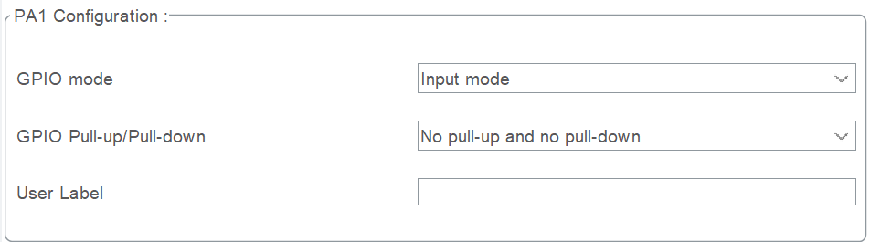

配置引脚时可以看到如下选项，这篇文章主要解释GPIO相关的选项
GPIO_Input

GPIO Pull-up/Pull-down
确定引脚在无外部信号时的默认电平，避免浮空引发误触。
No pull-up and no pull-down
浮空状态，适用于已有外部上/下拉电阻的电路。Pull-up
内部上拉电阻连接到VDD，默认高电平。Pull-down
内部下拉电阻连接到GND，默认低电平。
GPIO_Output
GPIO output level
默认输出电平
- Low
默认输出低电平 - High
默认输出高电平
GPIO mode
- Output Push Pull
推挽模式 - Output Open Drain
开漏模式
| 特性 | 推挽模式 | 开漏模式 |
|---|---|---|
| 驱动能力 | 强（直接驱动高/低电平） | 弱（高电平由上拉电阻提供） |
| 电平切换速度 | 快（MOSFET直接驱动） | 慢（高电平依赖RC充电） |
| 是否需要上拉电阻 | 不需要 | 需要（外部或内部） |
| 总线冲突风险 | 高（多设备可能短路） | 低（支持“线与”逻辑） |
| 功耗 | 较高（瞬态电流） | 较低（静态电流小） |
| 典型应用 | LED、PWM、高速单设备通信 | I²C、多设备总线、电平转换 |
总结就是开漏需要上拉电阻实现输出高电平，但推挽不需要。
开漏的优势在于可以实现线与逻辑，即多个设备的输出信号通过物理连接共享同一总线，当所有输出均为高电平时，总线输出才为高电平。
GPIO Pull-up/Pull-down
确定引脚在无外部信号时的默认电平，避免浮空引发误触。
No pull-up and no pull-down
浮空状态，适用于已有外部上/下拉电阻的电路。Pull-up
内部上拉电阻连接到VDD，默认高电平。Pull-down
内部下拉电阻连接到GND，默认低电平。
主要用于开漏，推挽似乎没什么用。
Maximum output speed
输出速率,取决于具体的芯片，下面以stm32F1系列为例，部分芯片可能存在very high配置。
| 配置 | 速率 |
|---|---|
| Low | 2MHz |
| Medium | 10MHz |
| High | 50MHz |
GPIO_Analog
GPIO
Analog模式用于配置引脚为模拟功能，适用于需要处理模拟信号的场景（如ADC输入或DAC输出）。
GPIO_EXTIx
配置本身没什么好说的，主要讲讲中断和事件的区别（当年应该是学过的，但我居然一点印象都没有了）。
| 外部中断（Interrupt） | 外部事件（Event） |
|---|---|
| 触发后通知CPU，跳转执行中断服务程序（ISR）。 | 触发后直接控制外设硬件（如ADC、DMA等），无需CPU干预。 |
| 需要软件处理（例如读取数据、清除标志位）。 | 完全由硬件自动完成，例如直接启动ADC转换或DMA传输。 |